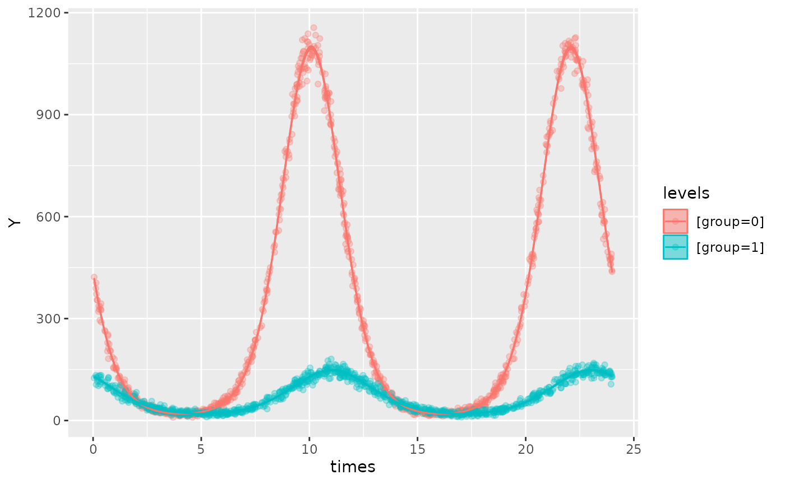
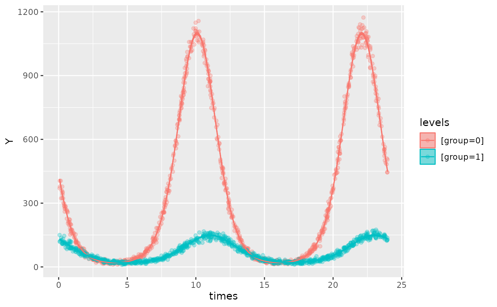
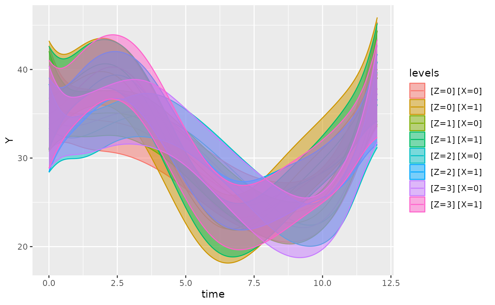
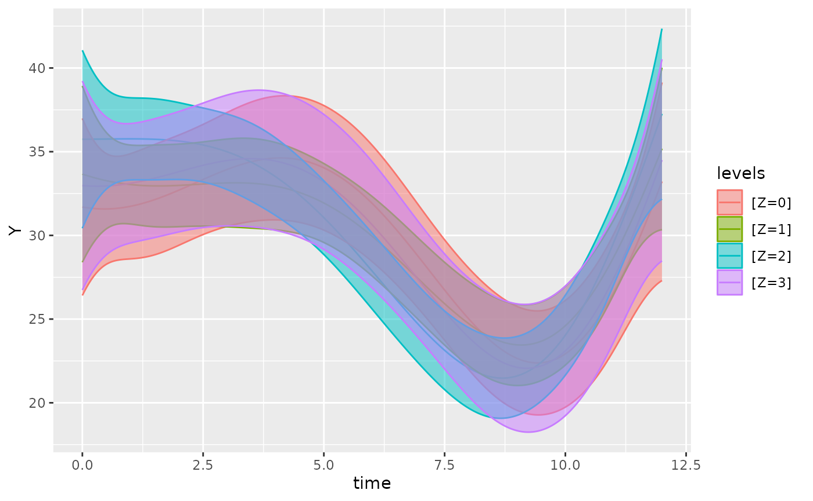
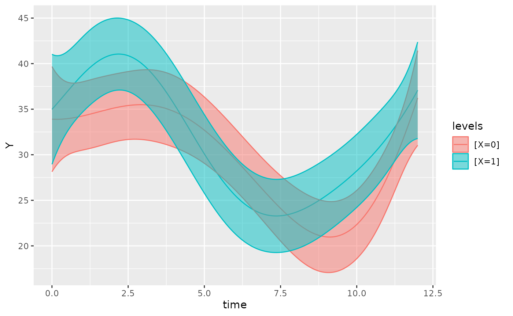

library(GLMMcosinor)
library(dplyr)
#>
#> Attaching package: 'dplyr'
#> The following objects are masked from 'package:stats':
#>
#> filter, lag
#> The following objects are masked from 'package:base':
#>
#> intersect, setdiff, setequal, unionIntroduction
The GLMMcosinor package allows the user to fit generalised linear
models based on circadian data, and allows users to summarise, predict,
and plot based on this modelling. Existing packages have focused
primarily on Gaussian data. Some circadian regression modelling packages
have allowed users to specify generalised linear models, but with
limited flexibility. GLMMcosinor takes a comprehensive approach to
modelling by utilising the glmmTMB package, which allows users to model
circadian data from a wide range of distributions (for full list - see
?family and ?glmmTMB::family_glmmTMB)
including:
- Binomial
- Guassian
- Inverse Gaussian
- Gamma
- Poisson
- Negative Binomial
The table below shows what features are available within GLMMcosinor and other methods.
name |
language |
multicomponent |
disp |
zi |
rhythmdiff |
diff_est |
family |
estimates |
ref |
|---|---|---|---|---|---|---|---|---|---|
GLMMcosinor |
R |
✓ |
✓ |
✓ |
✗ |
✓ |
n > 15 Any family listed in glmmTMB: Gaussian, Gamma, Binomial, Poisson, … |
Amplitude, Acrophase, Mesor |
Parsons, 2023 |
CircaCompare |
R |
✗ |
✗ |
✗ |
✗ |
✓ |
n = 1 Gaussian |
Amplitude,Acrophase, Mesor |
Parsons,2020 |
Cosinor |
R |
✗ |
✗ |
✗ |
✓ |
✓ |
n = ? Gaussian |
Amplitude,Acrophase, Mesor |
Sachs, 2014 |
Cosinor2 |
R |
✗ |
✗ |
✗ |
✓ |
✓ |
n = ? Gaussian |
Amplitude,Acrophase, Mesor |
Mutak, 2018 |
CosinorPy |
Python |
✓ |
✗ |
✗ |
✓ |
✓ |
n = 3 Gaussian, Poisson, negative-binomial |
Amplitude, Acrophase, Mesor |
Moskon, 2020 |
DiscoRhythm |
R |
✗ |
✗ |
✗ |
✗ |
✗ |
n = ? Gaussian |
Amplitude,Acrophase |
Carlucci, 2019 |
FMM |
R |
✓ |
✗ |
✗ |
✗ |
✓ |
n = 1 Gaussian |
Amplitude, FMM phase angle parameters: alpha, beta, gamma |
Fernández, 2022 |
Kronos |
R |
✓ |
✗ |
✗ |
✓ |
✓ |
n = ? Gaussian |
Amplitude,Acrophase, Mesor |
Singer, 2019 |
LimoRhyde |
R |
✗ |
✗ |
✗ |
✓ |
✓ |
n = ? Gaussian |
Amplitude,Acrophase, Period, Mesor |
Singer, 2019 |
RhythmCount |
Python |
✓ |
✗ |
✓ |
✗ |
✓ |
n = 6 Poisson, generalised Poisson, zero-inflated Poisson, negative binomial, zero-inflated negative-binomial |
Amplitude, Acrophase, Mesor, Zenith |
Velikajne, 2022 |
cosinor.glmm()
cosinor.glmm() wrangles the data appropriately to fit
the cosinor model given the formula specified by the user.
The formula argument for cosinor.glmm() is specified
using the lme4 style (for details see
vignette("lmer", package = "lme4")). The only difference is
that it allows for use of an amp.acro() call within the
formula that is used to identify the circadian components and relevant
variables in the data.frame. Any other combination of
covariates can also be included in the formula as well as random effects
and zero-inflation (ziformula) and dispersion
(dispformula) formulae. For detailed examples of how to
specify models, see the mixed-models,
model-specification
and multiple-components
vignettes.
Here, we fit a simple cosinor model without a grouping variable.
data(vitamind)
cosinor.glmm(Y ~ amp.acro(time, period = 12), data = filter(vitamind, X == 0))
#>
#> Conditional Model
#>
#> Raw formula:
#> Y ~ main_rrr1 + main_sss1
#>
#> Raw Coefficients:
#> (Intercept) main_rrr1 main_sss1
#> 29.6897927 0.9307862 6.2009917
#>
#> Transformed Coefficients:
#> (Intercept) amp acr
#> 29.689793 6.270459 -1.421806The output shows the coefficients fit within the cosinor model as well as the the (transformed) estimates for amplitude (amp) and acrophase (acr).
cosinor.glmm(Y ~ amp.acro(time, group = "X", period = 12), data = vitamind)
#>
#> Conditional Model
#>
#> Raw formula:
#> Y ~ X:main_rrr1 + X:main_sss1
#>
#> Raw Coefficients:
#> (Intercept) X0:main_rrr1 X1:main_rrr1 X0:main_sss1 X1:main_sss1
#> 30.3268724 0.8652034 6.4762532 6.2443822 4.6670145
#>
#> Transformed Coefficients:
#> (Intercept) [X=0]:amp [X=1]:amp [X=0]:acr [X=1]:acr
#> 30.3268724 6.3040372 7.9826612 -1.4331158 -0.6244411In the example above, the amplitude and phase are being estimated separately for the two groups but the intercept term is shared. This represents a shared estimate of the MESOR (Midline Statistic Of Rhythm) or rhythm-adjusted mean for both groups. Similarly to a normal regression model with lme4 or glmmTMB, we can add a term for X in the model so that we can estimate the difference in MESOR between the two groups.
cosinor.glmm(Y ~ X + amp.acro(time, group = "X", period = 12), data = vitamind)
#>
#> Conditional Model
#>
#> Raw formula:
#> Y ~ X + X:main_rrr1 + X:main_sss1
#>
#> Raw Coefficients:
#> (Intercept) X1 X0:main_rrr1 X1:main_rrr1 X0:main_sss1 X1:main_sss1
#> 29.6897959 1.9018623 0.9307876 6.5102900 6.2009896 4.8184618
#>
#> Transformed Coefficients:
#> (Intercept) [X=1] [X=0]:amp [X=1]:amp [X=0]:acr [X=1]:acr
#> 29.6897959 1.9018623 6.2704576 8.0994722 -1.4218056 -0.6371544We may also be interested in estmating the MESOR for the two groups
separately, rather than the difference between groups. To achieve this,
we can remove the intercept term by using 0 +.
cosinor.glmm(Y ~ 0 + X + amp.acro(time, group = "X", period = 12), data = vitamind)
#>
#> Conditional Model
#>
#> Raw formula:
#> Y ~ X + X:main_rrr1 + X:main_sss1 - 1
#>
#> Raw Coefficients:
#> X0 X1 X0:main_rrr1 X1:main_rrr1 X0:main_sss1 X1:main_sss1
#> 29.6898025 31.5916474 0.9307898 6.5102899 6.2010128 4.8184694
#>
#> Transformed Coefficients:
#> [X=0] [X=1] [X=0]:amp [X=1]:amp [X=0]:acr [X=1]:acr
#> 29.6898025 31.5916474 6.2704808 8.0994766 -1.4218058 -0.6371552The amp.acro() function controls the cosinor components
of the (fixed effects portion of the) model. It provides the user with
the ability to specify grouping structures, the period of the rhythm,
and the number of components. It includes several arguments that the
user needs to specify:
group(the name of the grouping variable in the dataset). This should be a column within the dataset being passed tocosinor.glmm()as thedataargument.time(the name of the time column). Again, ensure that the name matches the name of the time values in the dataset. Also, ensure that this argument is NOT a string.n_components(the number of components). If the user wishes to fit a multicomponent cosinor model, they can specify the number of components here. Note that this value will need to match the length of thegroupandperiodarguments as these will be combined for each component. If a multicomponent model where one component is grouped and other aren’t, the vector input for group must still be the same length asn_componentsbut have the non-grouped components represented asgroup = NA. For example, ifn_components = 3, then thegroupargument should have a length of 3, where the position of each character corresponds to the component that the group argument describes:
cosinor.glmm(
Y ~ X + amp.acro(time, n_components = 2, group = c("X", NA), period = c(12, 8)),
data = vitamind
)
#>
#> Conditional Model
#>
#> Raw formula:
#> Y ~ X + main_rrr2 + main_sss2 + X:main_rrr1 + X:main_sss1
#>
#> Raw Coefficients:
#> (Intercept) X1 main_rrr2 main_sss2 X0:main_rrr1 X1:main_rrr1
#> 29.9086246 1.9692766 -0.3151239 -1.1560676 1.8252011 7.4291117
#> X0:main_sss1 X1:main_sss1
#> 6.0546523 4.6204085
#>
#> Transformed Coefficients:
#> (Intercept) [X=1] [X=0]:amp1 [X=1]:amp1 amp2 [X=0]:acr1
#> 29.9086246 1.9692766 6.3237785 8.7487070 1.1982468 -1.2780058
#> [X=1]:acr1 acr2
#> -0.5563907 1.8369137In the example above, we have a multicomponent cosinor model with two
components. The first component is grouped by the X
variable in the input data whereas the second component is not grouped.
In the resulting output, we can see that each component is represented
by the suffixes (1 and 2). The first component has the grouping
structure but the second is represented only by the amp2
and acr2 (transformed) parameter estimates.
If a multicomponent model is specified
(n_components > 1) but the length of group
or period is 1, then it will be assumed that the one
group/period values specified apply to all
components:
For instance, the following two cosinor.glmm() calls fit the same models:
cosinor.glmm(
Y ~ X + amp.acro(time, n_components = 2, group = "X", period = 12),
data = vitamind
)
#>
#> Conditional Model
#>
#> Raw formula:
#> Y ~ X + X:main_rrr1 + X:main_sss1 + X:main_rrr2 + X:main_sss2
#>
#> Raw Coefficients:
#> (Intercept) X1 X0:main_rrr1 X1:main_rrr1 X0:main_sss1 X1:main_sss1
#> 29.6897846 1.9018647 0.4653934 3.2551346 3.1005056 2.4092330
#> X0:main_rrr2 X1:main_rrr2 X0:main_sss2 X1:main_sss2
#> 0.4653934 3.2551346 3.1005056 2.4092330
#>
#> Transformed Coefficients:
#> (Intercept) [X=1] [X=0]:amp1 [X=1]:amp1 [X=0]:amp2 [X=1]:amp2
#> 29.6897846 1.9018647 3.1352394 4.0497290 3.1352394 4.0497290
#> [X=0]:acr1 [X=1]:acr1 [X=0]:acr2 [X=1]:acr2
#> -1.4218062 -0.6371564 -1.4218062 -0.6371564
cosinor.glmm(
Y ~ X + amp.acro(time, n_components = 2, group = c("X", "X"), period = c(12, 12)),
data = vitamind
)
#>
#> Conditional Model
#>
#> Raw formula:
#> Y ~ X + X:main_rrr1 + X:main_sss1 + X:main_rrr2 + X:main_sss2
#>
#> Raw Coefficients:
#> (Intercept) X1 X0:main_rrr1 X1:main_rrr1 X0:main_sss1 X1:main_sss1
#> 29.6897846 1.9018647 0.4653934 3.2551346 3.1005056 2.4092330
#> X0:main_rrr2 X1:main_rrr2 X0:main_sss2 X1:main_sss2
#> 0.4653934 3.2551346 3.1005056 2.4092330
#>
#> Transformed Coefficients:
#> (Intercept) [X=1] [X=0]:amp1 [X=1]:amp1 [X=0]:amp2 [X=1]:amp2
#> 29.6897846 1.9018647 3.1352394 4.0497290 3.1352394 4.0497290
#> [X=0]:acr1 [X=1]:acr1 [X=0]:acr2 [X=1]:acr2
#> -1.4218062 -0.6371564 -1.4218062 -0.6371564Using summary()
The summary() method for cosinor.glmm
objects provides a more detailed summary of the model and its parameter
estimates and uncertainty. It outputs the estimates, standard errors,
confidence intervals, and p-values for both the raw model parameters and
the transformed (amplitude, and acrophase) parameters. The summary
statistics do not represent a comparison between any groups for the
cosinor components - that is the role of the test_cosinor()
function.
Here is an example of how to use summary():
object <- cosinor.glmm(Y ~ X + amp.acro(time, group = "X"), data = vitamind)
summary(object)
#>
#> Conditional Model
#> Raw model coefficients:
#> estimate standard.error lower.CI upper.CI p.value
#> (Intercept) 29.6897959 0.4583696 28.7914079 30.58818 < 2.22e-16 ***
#> X1 1.9018623 0.7919688 0.3496320 3.45409 0.016331 *
#> X0:main_rrr1 0.9307876 0.6260656 -0.2962784 2.15785 0.137087
#> X1:main_rrr1 6.5102900 0.9303406 4.6868560 8.33372 2.6011e-12 ***
#> X0:main_sss1 6.2009896 0.6701952 4.8874311 7.51455 < 2.22e-16 ***
#> X1:main_sss1 4.8184618 0.8963299 3.0616875 6.57524 7.6257e-08 ***
#> ---
#> Signif. codes: 0 '***' 0.001 '**' 0.01 '*' 0.05 '.' 0.1 ' ' 1
#>
#> Transformed coefficients:
#> estimate standard.error lower.CI upper.CI p.value
#> (Intercept) 29.68979587 0.45836964 28.79140787 30.58818 < 2.22e-16 ***
#> [X=1] 1.90186227 0.79196879 0.34963197 3.45409 0.016331 *
#> [X=0]:amp1 6.27045757 0.66965642 4.95795510 7.58296 < 2.22e-16 ***
#> [X=1]:amp1 8.09947222 1.10283566 5.93795403 10.26099 2.0696e-13 ***
#> [X=0]:acr1 -1.42180558 0.09993559 -1.61767574 -1.22594 < 2.22e-16 ***
#> [X=1]:acr1 -0.63715441 0.14043625 -0.91240440 -0.36190 5.7069e-06 ***
#> ---
#> Signif. codes: 0 '***' 0.001 '**' 0.01 '*' 0.05 '.' 0.1 ' ' 1Using predict()
The predict() method for cosinor.glmm
objects allows users to get predicted values from the model on either
the existing or new data. (These predicted values are used when
generating the plots using plot().)
fit <- cosinor.glmm(Y ~ X + amp.acro(X, group = NA), data = vitamind)
predict(fit)
#> [1] 29.54238 29.54238 31.18315 31.18315 31.18315 29.54238 31.18315 29.54238
#> [9] 29.54238 29.54238 31.18315 31.18315 29.54238 31.18315 29.54238 29.54238
#> [17] 31.18315 29.54238 29.54238 31.18315 29.54238 29.54238 31.18315 29.54238
#> [25] 31.18315 31.18315 31.18315 29.54238 29.54238 31.18315 29.54238 31.18315
#> [33] 29.54238 31.18315 29.54238 29.54238 29.54238 31.18315 31.18315 29.54238
#> [41] 31.18315 29.54238 31.18315 31.18315 29.54238 29.54238 29.54238 29.54238
#> [49] 29.54238 29.54238 31.18315 31.18315 29.54238 31.18315 29.54238 29.54238
#> [57] 29.54238 29.54238 29.54238 31.18315 29.54238 29.54238 29.54238 31.18315
#> [65] 29.54238 29.54238 29.54238 29.54238 29.54238 31.18315 29.54238 29.54238
#> [73] 29.54238 29.54238 29.54238 29.54238 29.54238 31.18315 31.18315 31.18315
#> [81] 29.54238 31.18315 29.54238 31.18315 29.54238 29.54238 29.54238 29.54238
#> [89] 29.54238 29.54238 29.54238 29.54238 31.18315 29.54238 31.18315 29.54238
#> [97] 31.18315 29.54238 31.18315 29.54238 29.54238 29.54238 29.54238 29.54238
#> [105] 29.54238 29.54238 31.18315 29.54238 29.54238 29.54238 29.54238 29.54238
#> [113] 31.18315 29.54238 29.54238 29.54238 29.54238 29.54238 31.18315 31.18315
#> [121] 31.18315 31.18315 31.18315 29.54238 31.18315 31.18315 29.54238 29.54238
#> [129] 29.54238 31.18315 29.54238 31.18315 29.54238 31.18315 31.18315 29.54238
#> [137] 29.54238 29.54238 29.54238 31.18315 29.54238 31.18315 31.18315 29.54238
#> [145] 29.54238 29.54238 31.18315 29.54238 31.18315 31.18315 31.18315 31.18315
#> [153] 29.54238 29.54238 29.54238 29.54238 29.54238 29.54238 29.54238 29.54238
#> [161] 29.54238 31.18315 29.54238 31.18315 31.18315 31.18315 29.54238 29.54238
#> [169] 31.18315 29.54238 29.54238 29.54238 31.18315 29.54238 31.18315 29.54238
#> [177] 29.54238 29.54238 29.54238 29.54238 31.18315 29.54238 31.18315 29.54238
#> [185] 29.54238 29.54238 29.54238 29.54238 29.54238 29.54238 29.54238 29.54238
#> [193] 31.18315 29.54238 29.54238 29.54238 29.54238 29.54238 29.54238 29.54238Plotting cosinor.glmm objects
The GLMMcosinor package includes two ways to visualise
cosinor.glmm objects. Firstly, the plot()
method creates a time-response plot of the fitted model for all
groups:
object <- cosinor.glmm(Y ~ X + amp.acro(time, group = "X"), data = vitamind)
plot(object)
This function also allows users to superimpose the data (that was
used to fit the model) over the fitted model, using the
superimpose.data = TRUE:
object <- cosinor.glmm(Y ~ X + amp.acro(time, group = "X"), data = vitamind)
plot(object, superimpose.data = TRUE)
If there are multiple factors in the model, the user can specify
which covariate to be plotted using the x_str argument
which accepts a string corresponding to a group name within the original
data. If not x_str is not given by the user, it will
default to the grouping variable(s).
The following examples demonstrate how x_str can be used
to produce different plots for the same model;
vitamind_new <- vitamind
# Z has 3 levels that aren't associated with outcome
vitamind_new$Z <- rbinom(length(vitamind_new$X), 3, prob = 0.5)
object <- cosinor.glmm(
Y ~ X + amp.acro(time, n_components = 3, group = c("Z", NA, "X"), period = c(12, 10, 8)),
data = vitamind_new
)
plot(object) # defaults to include all grouping variables (all combinations of X and Z)
plot(object, x_str = "X") # only shows grouping of X (defaults to first level of Z)
plot(object, x_str = "Z") # only shows grouping of Z (defaults to first level of X) In addition to time-response plots, the GLMMcosinor package also allows users to create polar plots. In these plots, for a given component, the angle of the point from the pole represents the acrophase estimate, and the distance from the pole to the point represents the amplitude estimate. The ellipses represent confidence regions for both amplitude and acrophase.
polar_plot(object)